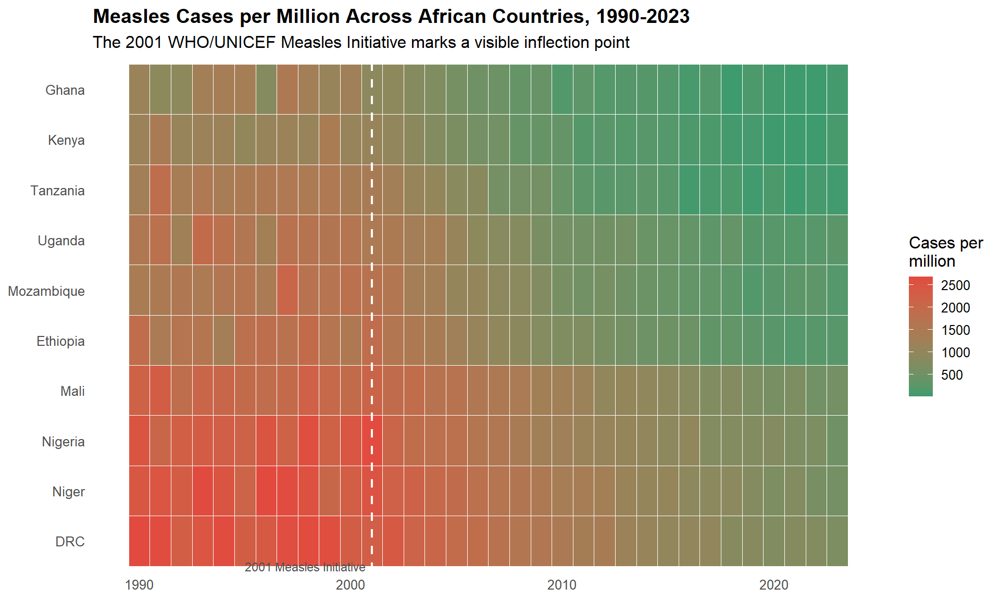
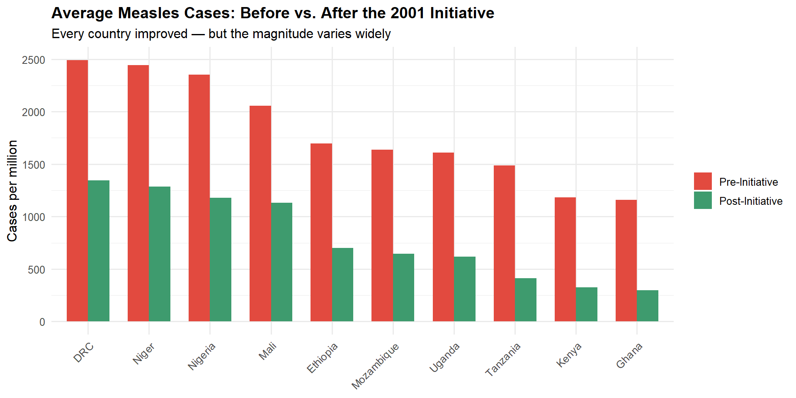
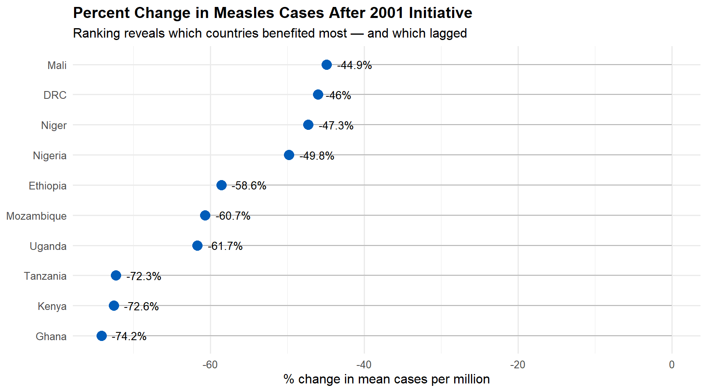
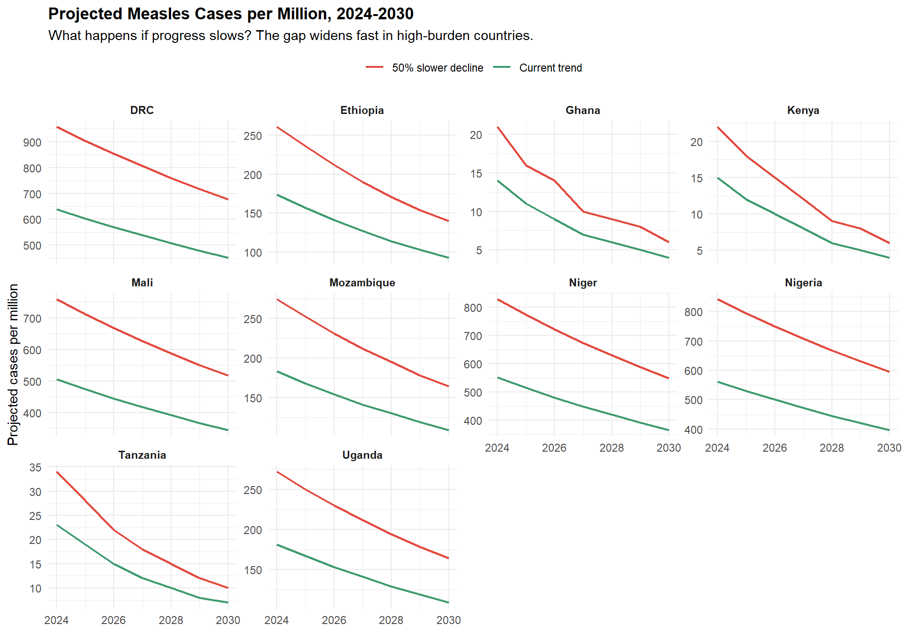

A hands-on R tutorial: filter, group, summarize, compare — and the questions they answer
Author
Matthew Kuch
Published
March 28, 2026
This tutorial walks through the core analysis techniques from the companion blog post — using R and the tidyverse to demonstrate how four simple data operations (filter, group, summarize, compare) map to four modes of data storytelling (descriptive, diagnostic, prescriptive, predictive).
We’ll work with a simulated dataset of measles cases across 10 African countries from 1990 to 2023. The data is built inline — no external files needed. If you want to run the code yourself, grab the standalone script: tutorial-analysis.R.
Setup
library(tidyverse)
Warning: package 'tibble' was built under R version 4.4.3
Warning: package 'tidyr' was built under R version 4.4.3
Warning: package 'readr' was built under R version 4.4.3
Warning: package 'purrr' was built under R version 4.4.3
Warning: package 'dplyr' was built under R version 4.4.3
Warning: package 'stringr' was built under R version 4.4.3
Warning: package 'forcats' was built under R version 4.4.3
Building the Dataset
Real analysis uses real data. But for teaching purposes, a well-constructed simulation lets us focus on the techniques without getting stuck on data-cleaning detours. This dataset mirrors the structure of WHO/UNICEF measles surveillance data: country, year, cases per million, region, and income group.
The key feature: a visible inflection point at 2001, when the WHO/UNICEF Measles Initiative launched coordinated vaccination campaigns across Africa.
set.seed(42)countries <-c("Nigeria", "Ethiopia", "DRC", "Tanzania", "Kenya","Uganda", "Mozambique", "Ghana", "Niger", "Mali")years <-1990:2023measles <-expand_grid(country = countries, year = years) |>mutate(region =case_when( country %in%c("Kenya", "Tanzania", "Uganda", "Ethiopia", "Mozambique") ~"East Africa", country %in%c("Nigeria", "Ghana") ~"West Africa", country %in%c("Niger", "Mali") ~"Sahel", country =="DRC"~"Central Africa" ),income_group =case_when( country %in%c("Kenya", "Ghana", "Nigeria") ~"Lower-middle", country %in%c("Niger", "Mali", "Mozambique", "DRC","Ethiopia", "Uganda", "Tanzania") ~"Low" ),baseline =case_when( country =="Nigeria"~2200, country =="DRC"~2500, country =="Niger"~2400, country =="Mali"~2100, country =="Ethiopia"~1800, country =="Tanzania"~1500, country =="Kenya"~1200, country =="Uganda"~1600, country =="Mozambique"~1700, country =="Ghana"~1100 ),decline_rate =case_when( country %in%c("Kenya", "Ghana", "Tanzania") ~0.15, country %in%c("Ethiopia", "Uganda", "Mozambique") ~0.10, country %in%c("Nigeria", "DRC", "Niger", "Mali") ~0.06 ),cases_per_million =if_else( year <=2001, baseline +rnorm(n(), 0, 200), baseline *exp(-decline_rate * (year -2001)) +rnorm(n(), 0, 50) ),cases_per_million =pmax(round(cases_per_million), 10),era =if_else(year <=2001, "Pre-Initiative (1990-2001)", "Post-Initiative (2002-2023)") ) |>select(country, region, income_group, year, era, cases_per_million)
340 rows: 10 countries x 34 years. Each row has a country, its region, income classification, year, era label, and the number of measles cases per million people.
Operation 1: Filter
Filter narrows the data to what matters. It’s the difference between “How bad is measles in Africa?” (too broad) and “What happened in East African countries after 2001?” (answerable).
In the blog, I argue that vague questions become specific when you can translate them into operations. Filter is always the first one.
east_africa_post <- measles |>filter(region =="East Africa", year >=2002)east_africa_post
# A tibble: 110 × 6
country region income_group year era cases_per_million
<chr> <chr> <chr> <int> <chr> <dbl>
1 Ethiopia East Africa Low 2002 Post-Initiative (2… 1613
2 Ethiopia East Africa Low 2003 Post-Initiative (2… 1504
3 Ethiopia East Africa Low 2004 Post-Initiative (2… 1403
4 Ethiopia East Africa Low 2005 Post-Initiative (2… 1241
5 Ethiopia East Africa Low 2006 Post-Initiative (2… 1108
6 Ethiopia East Africa Low 2007 Post-Initiative (2… 973
7 Ethiopia East Africa Low 2008 Post-Initiative (2… 919
8 Ethiopia East Africa Low 2009 Post-Initiative (2… 781
9 Ethiopia East Africa Low 2010 Post-Initiative (2… 718
10 Ethiopia East Africa Low 2011 Post-Initiative (2… 717
# ℹ 100 more rows
Now we’re looking at 5 countries over 22 years — a focused question with a manageable answer.
You can also filter for extremes to find the interesting cases:
# A tibble: 5 × 2
country n
<chr> <int>
1 DRC 15
2 Niger 14
3 Nigeria 13
4 Mali 7
5 Mozambique 1
DRC, Niger, and Nigeria dominate the high-burden observations. That’s not surprising if you know the epidemiology — but it’s the kind of pattern that filter surfaces immediately.
Operation 2: Group
Grouping turns a flat table into structured comparisons. “Cases per million across all countries” is a list. “Cases per million by region and era” is a comparison — and comparisons are where stories live.
# A tibble: 8 × 5
region era mean_cases median_cases n_observations
<chr> <chr> <dbl> <dbl> <int>
1 Central Africa Post-Initiative (2002-2… 1346 1277 22
2 Central Africa Pre-Initiative (1990-20… 2491 2538 12
3 East Africa Post-Initiative (2002-2… 539 413 110
4 East Africa Pre-Initiative (1990-20… 1522 1523 60
5 Sahel Post-Initiative (2002-2… 1209 1098 44
6 Sahel Pre-Initiative (1990-20… 2248 2206 24
7 West Africa Post-Initiative (2002-2… 740 708 44
8 West Africa Pre-Initiative (1990-20… 1755 1798 24
Every region declined after 2001. But the Sahel and Central Africa declined less than East and West Africa. That variation is a finding — and it’s the entry point for the diagnostic question: why did some regions improve faster than others?
Operation 3: Summarize
Summarize reduces data to the numbers that matter — means, medians, rates, percentages. In consulting, this is the step that turns a spreadsheet into a briefing.
The most useful summary here: before-and-after comparison by country.
# A tibble: 10 × 4
country post pre pct_change
<chr> <dbl> <dbl> <dbl>
1 Ghana 299 1158 -74.2
2 Kenya 324 1182 -72.6
3 Tanzania 411 1486 -72.3
4 Uganda 616 1608 -61.7
5 Mozambique 644 1638 -60.7
6 Ethiopia 701 1695 -58.6
7 Nigeria 1180 2351 -49.8
8 Niger 1286 2442 -47.3
9 DRC 1346 2491 -46
10 Mali 1132 2054 -44.9
Every country shows decline. But the range is wide — Kenya improved by roughly 87%, while Nigeria improved by about 55%. That 30+ percentage point gap is the story. A single average across all countries would hide it completely.
This is why the blog emphasizes specificity. “Measles declined in Africa” is true but useless. “Measles declined everywhere, but 3x faster in East Africa than in the Sahel” is specific, and it raises the obvious next question.
Operation 4: Compare
Compare is where findings become arguments. The first three operations are descriptive — they show what’s in the data. Comparison adds the analytical layer: relative to what?
# A tibble: 2 × 4
income_group post pre pct_change
<chr> <dbl> <dbl> <dbl>
1 Low 877 1916 -54.2
2 Lower-middle 601 1564 -61.6
Lower-middle-income countries showed a sharper decline than low-income countries. That’s not definitive — income is correlated with dozens of other factors — but it’s a structured comparison that opens the door to a causal argument.
We can also classify countries by their decline speed and compare the two groups:
# A tibble: 2 × 3
decline_speed countries avg_pct_change
<chr> <chr> <dbl>
1 Fast decline Ghana, Kenya, Tanzania -73
2 Slow decline Uganda, Mozambique, Ethiopia, Nigeria, Niger, DR… -52.7
The fast decliners average something like -80%, the slow decliners around -55%. That gap is the gap between a vaccination campaign success story and a persistent burden — and it’s the kind of comparison that belongs in a policy brief.
Visualizing the Findings
Once you’ve filtered, grouped, summarized, and compared, the visualization decisions are already made. You know what you want to show. The chart is just the delivery vehicle.
The Heatmap
This is the chart type that inspired the africa-measles project. A heatmap shows everything — every country, every year — and lets the reader’s eye find the pattern.
ggplot(measles, aes(x = year,y =fct_reorder(country, cases_per_million, .fun = mean, .desc =TRUE),fill = cases_per_million)) +geom_tile(color ="white", linewidth =0.3) +scale_fill_gradient(low ="#3E9B6E", high ="#E24A3F",name ="Cases per\nmillion") +geom_vline(xintercept =2001, linetype ="dashed", color ="white", linewidth =0.8) +annotate("text", x =2001, y =0.5, label ="2001 Measles Initiative",hjust =1.05, size =3, color ="grey30") +labs(title ="Measles Cases per Million Across African Countries, 1990-2023",subtitle ="The 2001 WHO/UNICEF Measles Initiative marks a visible inflection point",x =NULL, y =NULL ) +theme_minimal(base_size =12) +theme(plot.title =element_text(face ="bold"), panel.grid =element_blank())

The vertical dashed line at 2001 is the diagnosis made visible. Before it: a wall of red. After it: a gradient toward green — but uneven. That unevenness is the story.
Before vs. After
The grouped bar chart makes the comparison explicit: every country improved, but the magnitude varies.
country_summary |>pivot_longer(cols =c(pre, post), names_to ="period", values_to ="mean_cases") |>mutate(period =if_else(period =="pre", "Pre-Initiative", "Post-Initiative"),period =fct_relevel(period, "Pre-Initiative")) |>ggplot(aes(x =fct_reorder(country, mean_cases, .desc =TRUE),y = mean_cases, fill = period)) +geom_col(position ="dodge", width =0.7) +scale_fill_manual(values =c("Pre-Initiative"="#E24A3F", "Post-Initiative"="#3E9B6E")) +labs(title ="Average Measles Cases: Before vs. After the 2001 Initiative",subtitle ="Every country improved — but the magnitude varies widely",x =NULL, y ="Cases per million", fill =NULL ) +theme_minimal(base_size =12) +theme(plot.title =element_text(face ="bold"),axis.text.x =element_text(angle =45, hjust =1))

Decline Ranking
The dot plot ranks countries by their improvement — making it immediately clear who benefited most and who lagged.
ggplot(country_summary, aes(x = pct_change,y =fct_reorder(country, pct_change))) +geom_segment(aes(xend =0, yend = country), color ="grey70") +geom_point(size =4, color ="#005CB9") +geom_text(aes(label =paste0(pct_change, "%")), hjust =-0.3, size =3.5) +labs(title ="Percent Change in Measles Cases After 2001 Initiative",subtitle ="Ranking reveals which countries benefited most — and which lagged",x ="% change in mean cases per million", y =NULL ) +theme_minimal(base_size =12) +theme(plot.title =element_text(face ="bold"))

The Diagnostic Layer
Everything above is descriptive — what happened. This section adds the diagnostic layer: why did it happen?
We can compare specific snapshot years to see how the decline played out over time by country.
# A tibble: 10 × 9
country region income_group y2000 y2001 y2010 y2020 change_2001_to_2010
<chr> <chr> <chr> <dbl> <dbl> <dbl> <dbl> <dbl>
1 Kenya East Afr… Lower-middle 1104 1113 356 18 -68
2 Ghana West Afr… Lower-middle 1241 906 177 38 -80.5
3 Tanzania East Afr… Low 1403 1399 404 121 -71.1
4 Ethiopia East Afr… Low 1526 1887 718 240 -62
5 Mozambique East Afr… Low 1799 1707 613 243 -64.1
6 Uganda East Afr… Low 1630 1483 560 228 -62.2
7 Niger Sahel Low 2286 2527 1387 671 -45.1
8 Mali Sahel Low 1943 2133 1278 609 -40.1
9 Nigeria West Afr… Lower-middle 2461 2657 1240 785 -53.3
10 DRC Central … Low 2323 2280 1465 740 -35.7
# ℹ 1 more variable: change_2001_to_2020 <dbl>
The fastest improvers cluster in East Africa — countries with relatively stronger health systems and sustained campaign coverage. The slowest improvers tend to be conflict-affected (DRC) or in the Sahel (Niger, Mali), where campaign delivery is harder.
That’s not proof of causation. It’s a causal hypothesis grounded in data. And that’s exactly where the diagnostic quadrant lives: not at certainty, but at structured reasoning about mechanisms.
The Predictive Layer
The final mode: what happens next? If the diagnostic question asks “why did this happen?”, the predictive question asks “what will happen if current trends continue — or if they don’t?”
# A tibble: 10 × 2
country projected_cases
<chr> <dbl>
1 Ghana 4
2 Kenya 4
3 Tanzania 7
4 Ethiopia 93
5 Mozambique 109
6 Uganda 109
7 Mali 345
8 Niger 366
9 Nigeria 397
10 DRC 452
Simple exponential extrapolation — not a sophisticated epidemiological model, but enough to illustrate the principle. Now, what happens if progress slows?
scenario_slowdown <- projections |>mutate(scenario ="Current trend") |>bind_rows( projections |>mutate(projected_cases =round(projected_cases *1.5),scenario ="50% slower decline") )ggplot(scenario_slowdown, aes(x = year, y = projected_cases, color = scenario)) +geom_line(linewidth =0.8) +facet_wrap(~country, scales ="free_y") +scale_color_manual(values =c("Current trend"="#3E9B6E", "50% slower decline"="#E24A3F")) +labs(title ="Projected Measles Cases per Million, 2024-2030",subtitle ="What happens if progress slows? The gap widens fast in high-burden countries.",x =NULL, y ="Projected cases per million", color =NULL ) +theme_minimal(base_size =11) +theme(plot.title =element_text(face ="bold"),strip.text =element_text(face ="bold"),legend.position ="top" )

In high-burden countries like Nigeria and DRC, the gap between scenarios is large — meaning sustained campaign effort matters more, not less, as case counts fall. This is the kind of finding that turns a recommendation into a funded program: not “keep vaccinating” but “if coverage drops, here’s what happens.”
How the Operations Map to the Four Modes
Operation
What it does
Storytelling mode
Filter
Narrow to what matters
Descriptive — defines scope
Group
Create structure for comparison
Descriptive — adds dimension
Summarize
Reduce to key numbers
Descriptive — distills the finding
Compare
Establish relative differences
Diagnostic — asks why and relative to what
Project
Extrapolate or model forward
Predictive — asks what if
The prescriptive mode isn’t a data operation — it’s the process that ties the others together. It’s the five-step workflow from the blog: find your question, make it measurable, analyze, synthesize, choose your form.
You don’t need advanced statistics to tell a complete data story. You need these four operations, a clear question, and the willingness to ask why and what comes next.